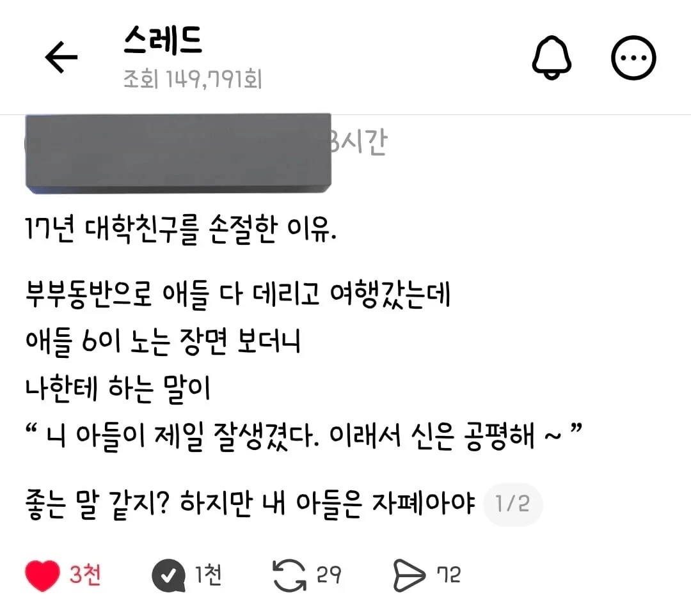

이런 씨바려니

이런 씨바려니
주작일듯
ㄹㅇ 저런 미친놈이 어딨음
ㄹㅇ 미친놈인가
보통 주작같으면 현실이더라
주작 아니었던것 같아. 내가 이글 첨 봤을때 아이디찾아서 쓰레드 가봤더니 진짜 자폐아 엄마였던걸로 기억해. 오래되어서 기억은 가물거리간 하지만.
정말 가끔 싸패같은 말 하면서 팩트잖아 하는 경우가 있긴 해서 무조건 주작이다하기도 뭣한듯
무슨뜻이지?이해가안되ㅜㅠ
니새끼가 잘생겼는데 병신이라서 내 마음이 편안하다라고 말하는 병신 새끼 손절했다.
신은 공평하다, 왜냐면 자폐아로 태어나는 대신 잘생긴 얼굴을 주었으니
라는 말
아냐 그 반대 의미임.
'자폐아지만 잘생겼잖아 힘내..' 이게 아니고
'잘생겼는데 자폐잖아?ㅋㅋㅋ' 이거임..
힘내라고 한적 없는데
아,예~
주작이지 자폐아가 애들하고 놀수가없음
경미한거면 저렇게 떠벌리고 다녔을리가없고
자폐도 다 다름.
울 앞집 아이도 자폐인데 잘 모랐음.
가끔 놀이터에서 울 애들이랑 놀 때도 몰랐음.
그런데 알게 된 이유가 36개월짜리 카페 혼자 들어가서 음료수를 시키고,
자리에 앉아서 닌텐도 스위치로 슈퍼로봇대전 게임을 하고 있었음.
글도 못 읽는 나이임 36개월은 숫자도 세지 못함.
졸라 신기해서. 앞집에 부모님이랑 이야기를 하다가. 자기 아들이 자폐가 있다고,
이야기 하는데 너무 충격이였음.
말도 졸라 잘하고, 운동도 잘하고, 애들이랑 이렇게 사교성이 좋은 애가 어떻게 자폐죠?
그랬더니 . " 아스퍼거 증후군" 이라고 하던데,
밤에 잘 때 불을 끄면 난리가 나고 흥분함. 한글, 혼자서 독학으로 다 끝냈다고함.
너무 아이가 예민을 넘어서 36개월짜리가 방문에 머리를 계속 박었다고
병원 가서 진료 받아 봤는데 이렇게 진단 나왔다고 함.
고기능 자폐라고, 살아가는데 큰 어려움은 없고 자기 자신이 잘 컨트롤 하면, 일반인들과 어울려 사는데
큰 문제 없을 것이라고 하는데,,
고집이 너무 쎄고 한번 그걸 해야겠다고 마음 먹으면 36개월 아기가 10시간 이상 그것만한다고함.
블럭에 한번 마음 먹으면 블럭으로 다 사용해서 성 만듬, 게임 한번 하면 엔딩 보기전까지 계속함.
엔딩 없는 테트리스 같은 경우는, 애가 기절할때까지 함. 여기서 게임기 뺏으면, 머리 박기 시전함.
17년 친구가 아니라 17년 지인인거지
관종글
칼찌해달라는건가?
좀 모자라서 저게 나름 괜찮은 칭찬이라고 생각하는 사람들이 있을지도 모르겠다는 생각이 들기도 하지만 ㄸㅂㄹㄴ
니 아들 많이 똑똑해야 될것같은데?
주작판명
맘속에 하고 싶은말이 튀어나온듯
야이씨 니 아들 내일 카이스트 들어가야겠다
잘생겼다고만 하지 뭔